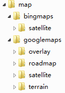
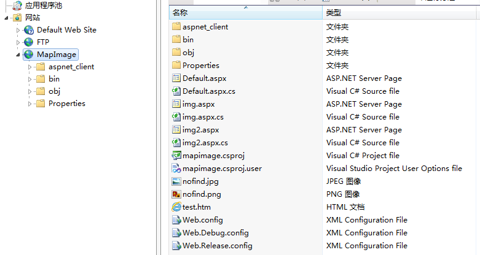

部署与配置
一.地图瓦片的部署
控件运行于地图模式时，需读取地图瓦片，地图瓦片的部署如下：
1. 复制地图瓦片文件
复制并解压地图瓦片文件到服务器。地图瓦片文件目录应类似如下形式：

2. 建立地图瓦片web服务
复制web服务的程序文件到服务器，并在IIS中配置为一个新网站，配置端口，如8080。

3. 配置瓦片文件路径
用记事本打开web服务程序文件中的web.config，配置瓦片文件路径。如下方红字部分
<configuration>
<system.web>
<compilation debug="true"
targetFramework="4.0"/>
</system.web>
<appSettings>
<add key="mappath" value="E:\Map\"
/>
</appSettings>
</configuration>
二.控件配置
1.配置控件的地图瓦片服务路径参数
在主项目代码中进行配置
a.在主项目属性->设置中，增加一个配置参数，如：mapurl（参数名） http://xxx.xxx.xxx.xxx:8080/img.aspx（参数值，即上述一.2建立的web路径）
b.在主项目的app.xmal的Application_Startup事件中配置控件参数，如：
private void
Application_Startup(object sender, StartupEventArgs e)
{
WpfEarthLibrary.Global.MapIP =
DNV863.Properties.Settings.Default.mapurl; //将地图瓦片服务路径赋给控件静态变量MapIP
}
三.生成部署程序要注意的问题
1.包含devexpress中用到的theme程序集。
2.包含并更新各类配置的xml文件，设置为内容，更新则复制。要把这些xml文件copy更新到项目根下。在项目发布->应用程序文件中，要把它们设置为<包括>。
3.d3dearth.dll也如同2处理。
4.设置项目为完全信任。
5.若发布程序可能更改配置，则需要在项目发布->应用程序文件中，把config的哈希改为排除。同时，项目签名中，取消为程序清单签名。